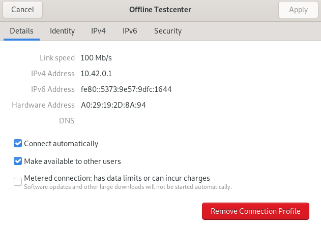
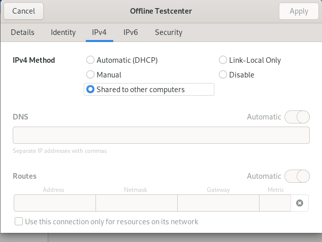

Offline-Szenario
Das IQB-Testcenter ist eine Webanwendung, d. h. sie muss auf einem Server installiert werden, der dann durch die Webbrowser der Testpersonen erreichbar ist. Sollte eine Schule keine oder eine zu schlechte Internet-Verbindung haben, kann man als Server auch einen mitgebrachten Laptop einrichten und an einen WLAN-Access-Point anschließen (Kabel). Das Einrichten des Servers und des Access-Points ist hier beschrieben.
Dieser Guide wurde unter Ubuntu 23.04 und Debian 11 bullseye getestet.
Vorbereitung
- Installation von Docker und Docker-Compose sowie make
- Router im Access Point Modus
- (Optional) Installation von dnsmasq für lokalen DNS Server
Wenn der Router per Ethernet Kabel mit dem Server (Laptop auf dem die Testcenter Instanz laufen soll) verbunden ist, gehe auf dem Server zu Einstellungen Netzwerk.
Um die Wiederverwendbarkeit zu erleichtern empfehle ich ein neues Profil für diese Verbindung anzulegen.
Das wichtige ist, dass Make available to other users unter Details und Shared to other computers unter IPv4 aktiviert sind.
Nach Erstellung des Profils sollte es so aussehen:


Installation Testcenter
Dem Guide für die Installation des Testcenters folgen. Während man das Installationsskript (install.sh) ausführt gibt es einige Schritte die zu beachten sind.
Unter HOSTNAME muss entweder die IP Adresse der Verbindung zum Router eingetragen werden (in diesem Beispiel 10.42.0.1) oder eine besser menschenlesbare Adresse (z.B. iqb-testcenter.lan), allerdings benötigt dieser Schritt die Auflösung der Adresse mit Hilfe eines lokalen DNS Servers.
Außerdem sollte die Setup-Frage “Use TLS?” mit N (No) beantwortet werden.
Man sollte den weiteren Hinweisen des Guides ebenfalls folgen. Wenn man sich bei dem Hostname für die IP Adresse entschieden hat und das Testcenter erfolgreich hochgefahren ist, dann sollten sich Clienten jetzt mit dem vom Router aufgespannten WLAN verbinden können und über die http://10.42.0.1 auf das Testcenter zugreifen können. Wenn man sich für eine andere Adresse entschieden hat, dann sollte ein lokaler DNS Server eingerichtet.
Lokaler DNS Server
Um einen lokalen DNS Server zu starten können Tools wie dnsmasq oder bind verwendet werden. Dieser Guide verwendet dnsmasq.
Nach der erfolgreichen Installation muss eine Umleitungsregel für die zuvor gewählte Adresse hinzugefügt werden. Dies kann man z.B. mit nano erledigen:
sudo nano /etc/dnsmasq.confDort diese Regel hinzufügen:
address=/#/x.x.x.xFür x muss der vorher ausgewählte Hostname eingesetzt werden und für x.x.x.x die IP Adresse des Servers. Für dieses Beispiel müsste die Regel wie folgt aussehen:
address=/iqb-testcenter.lan/10.42.0.1Nach dem man die Änderungen gespeichert hat, muss der DNS Server mit folgendem Befehl neugestartet werden.
sudo systemctl restart dnsmasq.serviceSofern möglich, sollte man in den Routereinstellungen selbst noch die IP Adresse des DNS Server für die Clienten auf die IP Adresse des Servers (in diesem Fall 10.42.0.1) ändern.
Dieser lokaler DNS Server wurde in einer Umgebung getestet in der keine Verbindung zum Internet bestand, da dies dazu führen könnte, dass der lokale DNS Server von den DNS Server der aktiven Internetverbindung überschrieben wird.
Bereinigung des Testcenters
Möchte man die Testcenterinstallation bereinigen, so sollten folgende Befehle im Installationsverzeichnis des Testcenters ausgeführt werden:
make down
docker rm -f $(docker ps -a -q)
docker volume rm $(docker volume ls -q)
docker rmi $(docker images -a -q)- beendet die Anwendung.
- entfernt alle Container.
- entfernt alle Volumes.
- entfernt dann alle Images.
Danach kann das bisherige Installationsverzeichnis gelöscht werden.
Umgebungsvariable: TLS_ENABLED
Das Testcenter läuft ab der Version 15 auschließlich mit TLS. Mit der Version 15.1.0 wurde es wieder ermöglicht TLS zu deaktivieren. Allerdings gab es bei den Installationsskripten der Versionen 15.1.0 bis 15.1.5 einen Fehler, so dass beim Setup des Testcenters keine Abfrage bezüglich TLS kam. In diesen Versionen muss manuell die Umgebungsvariable angepasst werden um non-tls zu ermöglichen. Dazu im Installationsverzeichnis des Testcenters die .env Datei öffnen. Zum Beispiel mit:
nano .envUnd dann den Wert der Umgebungsvariable TLS_ENABLED wie folgt setzen:
TLS_ENABLED=noLange Startzeiten des Testcenters umgehen
Das Testcenter validiert standardmäßig beim Starten alle Dateien zur Aufgaben-Definition, alle Dateien zur Testheft-Definitionen und zur Studien-Definition. Dies kann bei einer hohen Anzahl von Testheften und Zugängen für die Testpersonen zur einer sehr hohen Startzeit führen.
Dies kann mit einer manuellen Einstellung vermieden werden. Man benötigt dafür am besten zwei Konsolen für die Eingabe von Befehlen. Folgenden Befehl im Installationsordner des Testcenters durchführen:
make runIn der zweiten Konsole dann diesen Befehl ausführen:
docker exec -it testcenter-backend sed -i '6s/$/ --skip_read_workspace_files/' /entrypoint.shNun wird beim Starten das validieren der Dateien übersprungen. Es ist wichtig, dass das Testcenter nur noch mit “make stop” heruntergefahren wird, da “make down” den Fix ungültig machen würde. Dann müsste man die vorangegangen Schritte wiederholen.